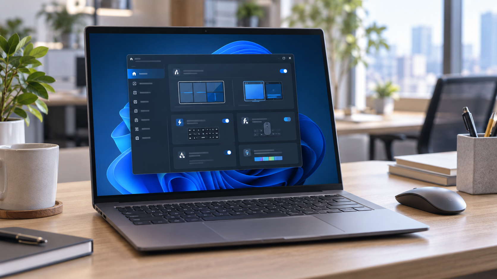
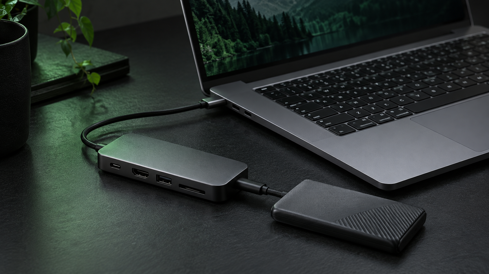

特集「Microsoft PowerToys」最新版が公開
作業を速くする新機能をまとめて紹介
Windowsの操作をより快適にする定番ユーティリティ。追加された機能と、今日から使える設定を編集部が試しました。
記事のポイントを見る →
特集Windowsの操作をより快適にする定番ユーティリティ。追加された機能と、今日から使える設定を編集部が試しました。
記事のポイントを見る →
該当する記事はまだありません。
デスクで長く使える、実用重視のツールを紹介。
導入方法から使いどころまで、編集部が確認。